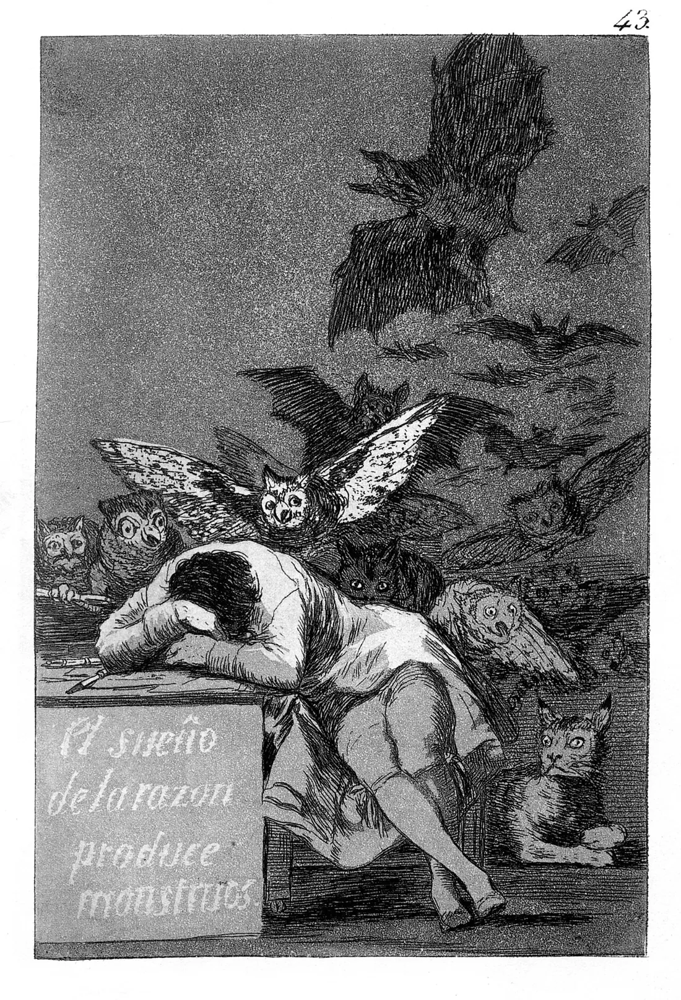

Sessão 07 / Do argumento à performance
Tornar a regra visível
Como podemos tornar visíveis as regras de um algoritmo?
Começar
Recupera
De memória, sem abrir o caderno.
De memória
Entrega a análise crítica: a versão revista ou, se ficou a meio na sessão 06, acaba-a primeiro. Depois, de memória:
Facto ou suposição: qual é a diferença?
Confirmar
O facto confirma-se com data e fonte; a suposição ainda não está confirmada.
Quais são as quatro perguntas do método?
Confirmar
O que aconteceu, quem decidiu, com que regras, o que podia ter sido diferente.
Que fonte independente encontraste para o teu caso?
Vê
Observa primeiro. Lê depois.
Material 1 de 3: A gravura 43 de Goya
Observa o homem e os animais. Depois lê o que um manuscrito do Prado diz sobre esta gravura.

«A imaginação abandonada pela razão produz monstros impossíveis; unida a ela, é a mãe das artes e a origem das suas maravilhas.»
Legenda do manuscrito do Museu do Prado, tradução nossa publicada no passo 06
Material 2 de 3: A distanciação de Brecht
Que interrupção faria o público ver a regra?
Material 3 de 3: Quatro frases de conceito
Lê as quatro. Ainda não escolhas.
- «O público é o feed: cada espectador só vê o que os outros aplaudiram.»
- «Vamos explicar o que é um algoritmo com exemplos.»
- «Uma única voz fala durante dez minutos e vai sendo cortada, até ficar só a palavra que mais agradou.»
- «Vamos mostrar estatísticas sobre redes sociais.»
Decide
Primeiro em silêncio, cada pessoa. Depois em grupo.
Sem ecrã
Primeiro, em silêncio
Das quatro frases, quais são conceitos de performance, e quais são resumos de aula? Guarda uma razão.
Três minutos. Escreve a tua resposta e uma razão no cartão de decisão. Depois, uma volta: cada pessoa lê o seu cartão, sem comentários.
Depois, em grupo
- Escrevam um conceito numa frase, a partir da casa 1 (a regra) e da casa 4 (a pergunta).
- Com ou sem ecrã: confirmem ou revejam a casa 5.
- Escrevam a proposta de valor em três linhas: o que a peça oferece; a quem; o que custa a quem a faz e a quem a vê. Juntem uma regra para o que a peça gasta e para o que deixa.
No fim, registem a decisão e uma razão que ficou vencida.
Comparar razões
Um conceito diz o que o público faz ou sofre em cena; um resumo diz o que vai ser explicado. A peça pode ser bela e estranha, mas tem de deixar o público mais acordado do que entrou.
Faz
Em papel ou no ficheiro do grupo.
Em papel
- Escrevam o guião, versão 1, em quatro partes. Entrada: o que o público faz ao chegar. Regras: o que a peça lhe faz, sem explicar. Viragem: o momento em que o público percebe a regra. Saída: o que fica a saber. A viragem pode usar a frase do caso, da casa 6.
- Experimentem uma sequência curta com os materiais da sala e revejam uma escolha.
- Quem não quer estar em cena tem um papel com o mesmo peso no processo: luz, som, regras, registo.
Rever com outra pessoa
Outro grupo diz em que momento perceberia a regra.
Quem revê marca uma coisa que se percebe e uma que falta, e faz uma pergunta.
GuardarCasa 7 do mapa do Contra-feed: Conceito e guião v1
O conceito numa frase; o guião, versão 1; a proposta de valor em três linhas.
- 1A regra (casa anterior)
- 2O sinal e o custo (casa anterior)
- 3As regras da casa (casa anterior)
- 4A pergunta e o público (casa anterior)
- 5Os meios e os créditos (casa anterior)
- 6O caso (casa anterior)
- 7Conceito e guião v1 (casa de hoje)
- 8Ensaio e guião v2 (casa seguinte)
- 9Defesa e manifesto (casa seguinte)
- 10O que o público viu (casa seguinte)
Contorno cheio: casas anteriores. Preenchida: a casa de hoje. Tracejado: casas seguintes.
Leva
Em papel, antes de sair.
Em papel
Em papel, antes de sair
Numa frase: o que vai o público perceber que não via, e em que momento?
Confirma
- Situas a viragem.
- Não explicas a regra por palavras.
- Ligas a forma à pergunta.
O registo fica neste aparelho.